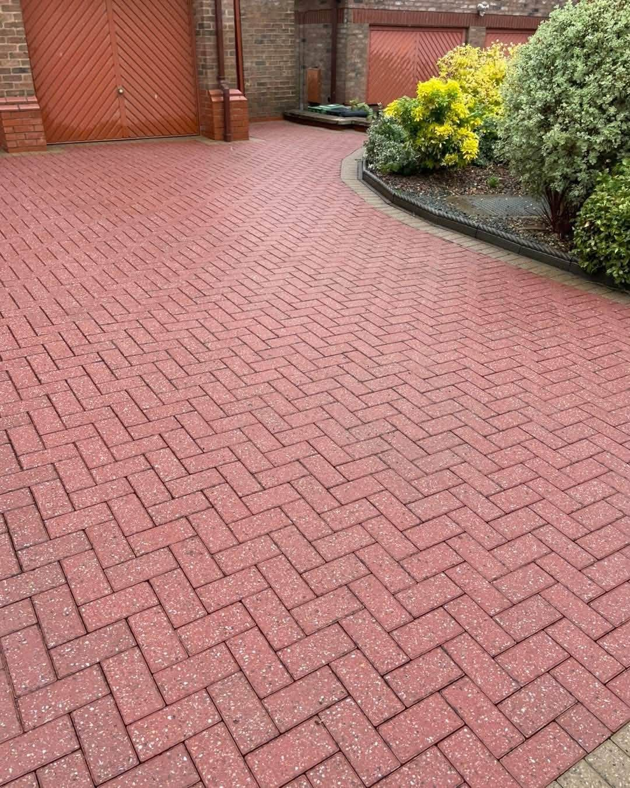
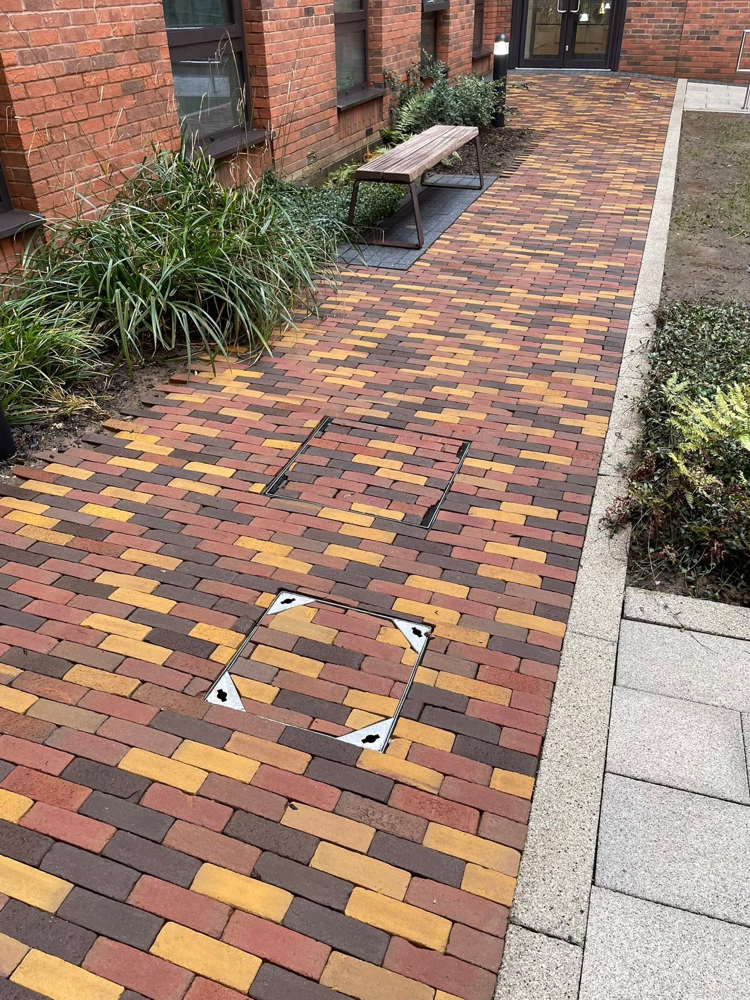
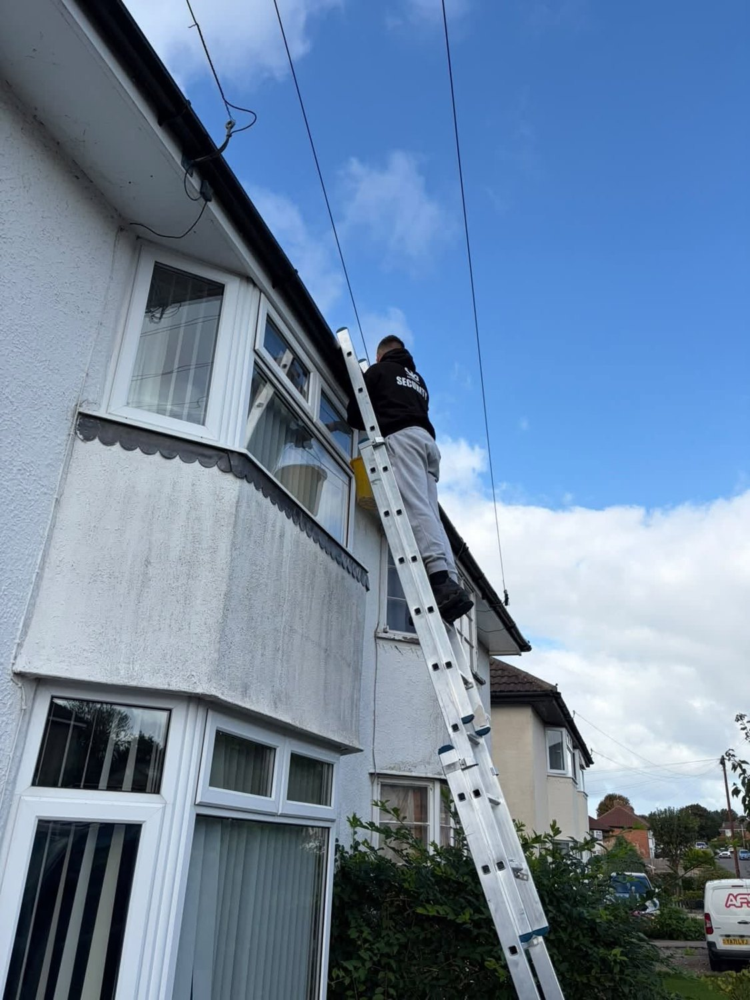
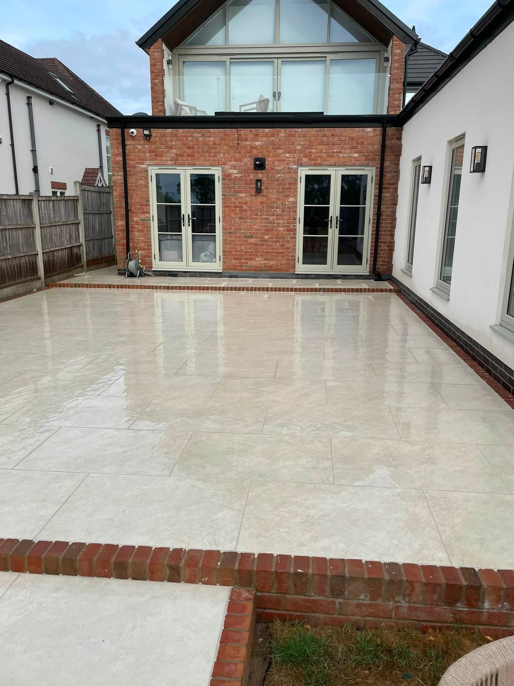
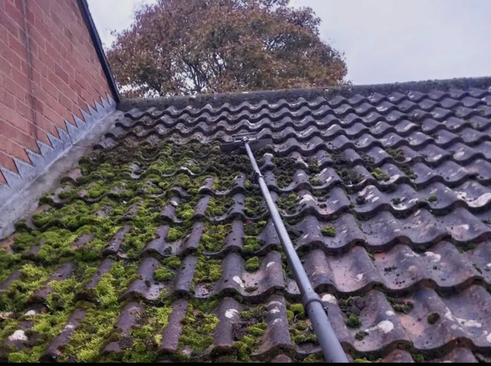
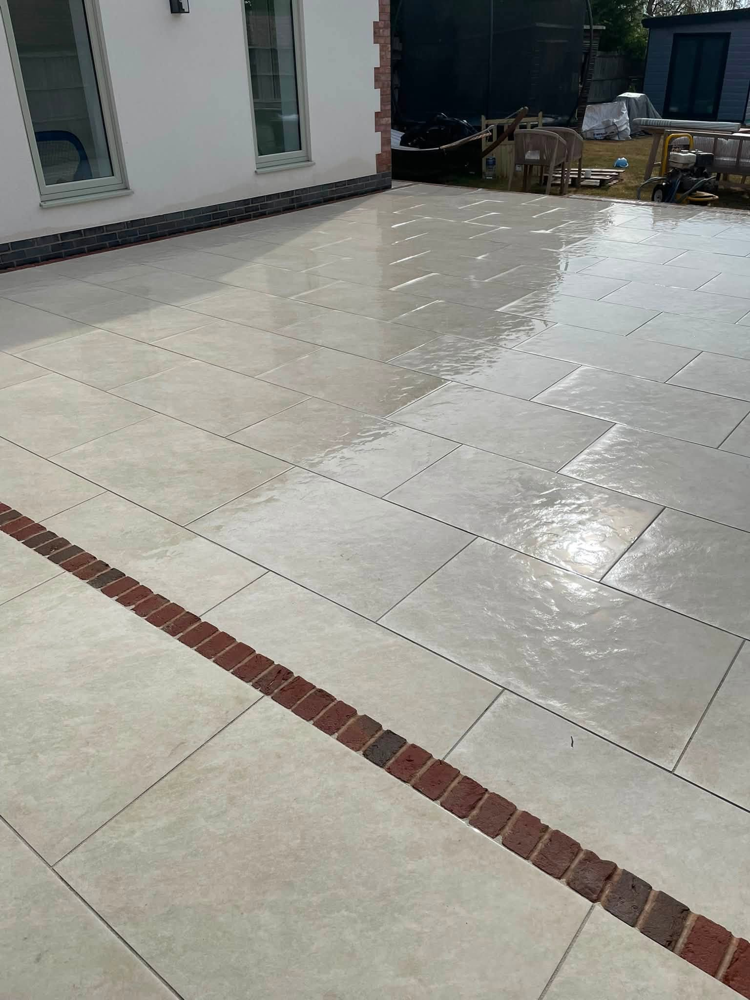
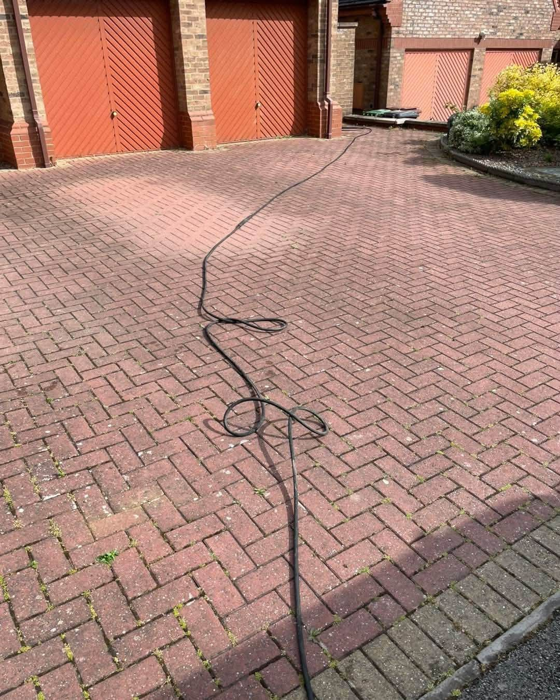

Driveways & patiosPressure washing for hard surfaces
CARLISLE · CUMBRIA · SOUTH WEST SCOTLAND
Bring back the look of your home.
Professional exterior cleaning for driveways, patios, roofs, gutters and more. AquaJet helps tired outdoor surfaces look their best again.
Fully insuredFree, no-obligation quotesDomestic & commercial
Roof & gutter cleaningClear growth and built-up debris
Fascias & soffitsRefresh the roofline
Windows & solar panelsPure water cleaning services
EXTERIOR CLEANING IN CARLISLE
A clean exterior makes a real difference.
AquaJet covers a wide range of outside cleaning, from paving and decking to the harder-to-reach parts of the property. Ask for a quote for the surfaces that need attention.
Request a free quote →

MORE THAN PRESSURE WASHING
From the paving to the roofline.
The services shown in AquaJet's information include driveways, patios, roofs, gutters, fascias, soffits, decking, fences, solar panels and windows. One point of contact for the exterior work around your property.
Discuss your property →

WHAT WE CLEAN
Exterior cleaning for the surfaces that matter.
Illustrative cleaning photos, selected to show the types of work AquaJet offers.







THE DIFFERENCE CLEANING MAKES
Restore the look of outdoor surfaces.
These illustrative photos show paving during and after a clean. Send AquaJet a photo of your own property for a free, no-obligation quote.
Ask for a quote →
LOCAL TO CARLISLE
Professional care for your property's exterior.
AquaJet Exterior Cleaning Services advertises professional exterior cleaning for domestic and commercial properties in Carlisle, Cumbria and South West Scotland.
01
Fully insured
The business lists fully insured exterior cleaning.
02
Free quotes
Ask for a no-obligation quote for your property.
03
Broad range of services
Hard surfaces, roofline, decking, fences, solar panels and windows.
FREE, NO-OBLIGATION QUOTE
Tell AquaJet what needs cleaning.
Complete the form and WhatsApp will open with your details ready to send. This is a quote request, not a confirmed booking.
AQUAJET EXTERIOR CLEANING
Ready to freshen things up?
Carlisle, Cumbria & South West Scotland · aquajetcarlisle@gmail.com